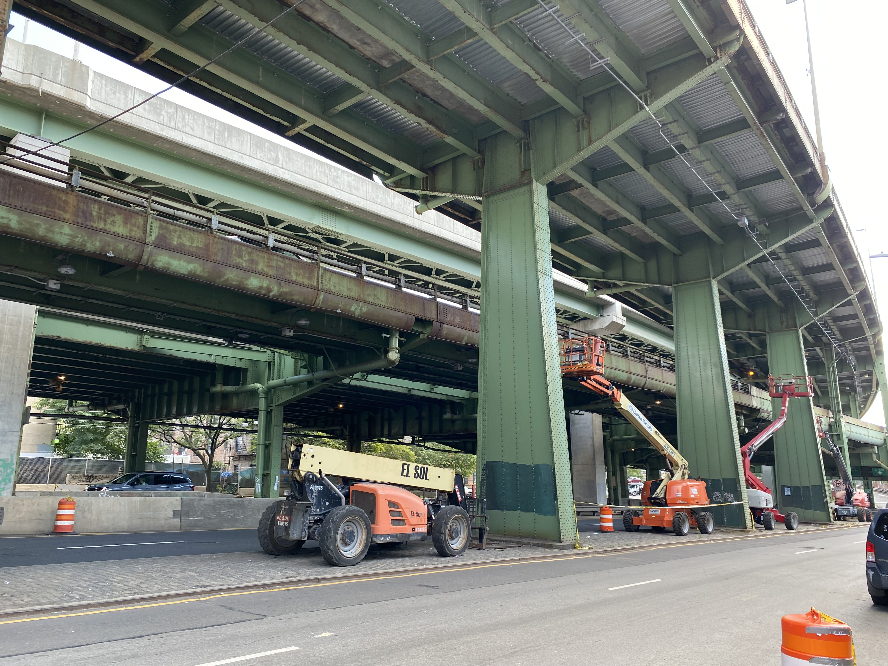
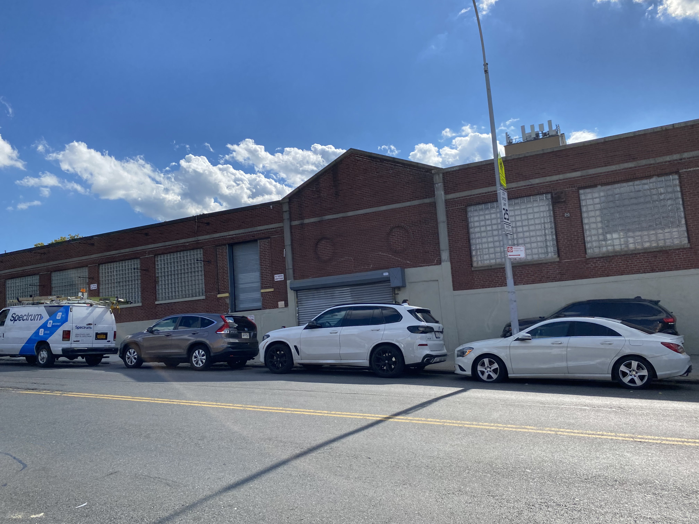

Buscarán plan de solución a problemas de tránsito en la 3 Avenida de Brooklyn
Con pláticas ciudadanas, el DOT de la Ciudad de Nueva York iniciará el proceso del estudio de viabilidad para mejorar el tránsito de Sunset Park
Por Eduardo González | Sep. 29, 2022
Read in English

Para socializar los problemas de tránsito en la zona de Sunset Park y dar una solución al tráfico de la 3ra Avenida, el Departamento de Transporte de la Ciudad de Nueva York realizará foros de participación con la comunidad, como antesala a un estudio de viabilidad de tránsito; esto, según representantes del Community Board del Distrito 7 de Brooklyn, se realizó tras una petición que duró 10 años.
Así lo comentó la titular de las comisiones de Transporte y del Tránsito de Tráilers, de la Junta Comunitaria del Distrito 7, Katherine Walsh, quien aseguró que el aval fue dado por el propio Comisionado de Transporte del Borough de Brooklyn, Keith Bray.
"Él ha confirmado que van a hacer parte del estudio, van a hacer los foros de participación de la comunidad (...) vamos a iniciar el proceso de planificación con el Departamento, el transporte, otras agencias, otros socios y organizaciones de la comunidad. Vamos a trabajar en un proceso de divulgación para establecer un foro de la comunidad para que la gente pueda venir a hablar de sus experiencias en la 3ra Avenida”, dijo.
Según la página NYC Crash Maper, en la mayoría de los accidentes de esta avenida, se desconoce lo que los provocó, pero registra como una de las principales causas, el hecho de que los automovilistas no ceden el paso.
Esto, adjunto al hecho de que el 37.79% de la extensión territorial del Distrito Comunitario 7 de Brooklyn está destinada a actividades industriales, hace que el tránsito de vehículos de carga sea una constante sobre la 3 Avenida, que es la única que conecta hacia el Belt Parkway y el Gowanus Expressway, las vías rápidas que conectan el Borough de Brooklyn con el de Staten Island.
El estudio que solicitan, dice Katherine, ayudará a evaluar integralmente la zona y realizar modificaciones que no entorpezcan el tránsito de vehículos y aminoren riesgos a vecinos.
“La razón por la que el estudio es tan importante es porque podremos evaluar cómo el tráfico se mueve y después, una vez que el estudio se complete, nos podrá hacer recomendaciones, que aunadas a las solicitudes de la comunidad, nos permitirán hacer estos cambios". dijo.
Para vecinos como Luis Álvarez, quien vive en la zona desde hace ocho años, los semáforos duran muy poco, lo que representa un problema para quienes cruzan las calles rumbo hacia la guardería que está sobre la 60, así como los adultos mayores que tienen que esperar dos luces verdes para cruzar la avenida, quedándose muchas veces al centro del cruce.
“Aparte de que es una vía muy congestionada, es muy, muy amplia. Entonces los semáforos también a veces no dan el suficiente tiempo para pasar de un lado al otro. Es también es uno de los problemas que tiene (...) son dos, dos vías, o sea, por una dos vías por sentido, entonces cuesta. A veces toma tiempo y no es suficiente”.
Luis Álvarez
Vecino de Sunset Park
“Hay muchos carros que pasan por la 59 que no dejan a los muchachos llegar a la escuela. Eso es un problema del que los muchachos tienen que cuidarse mucho: cruzar rápido la calle, porque estos carros pasan bien rápido”.
Madeline Inocente
Vecina de Sunset Park
¿Por qué es importante?
Es la salida a la autopista
La ubicación de este cruce tiene varias particularidades a contemplar, que por las mañanas, entorpecen el tráfico, pues es la única salida hacia la autopista, y es generalmente utilizada por transportistas.
Hay escuelas alrededor
La zona alberga el Magical Years Early Childhood Center, así como del otro lado, la Secundaria P.S. 506: The School of Journalism & Technology, lo que a decir de vecinos, intensifica la presencia de niñas y niños por las mañanas.
Es una vía ciclista

Tanto ciclistas particulares como deliveristas suelen pasar por esta vía. En lo que desde el 2011, año en el que se hizo la petición del estudio en la zona, a la fecha, se han registrado 1083 ciclistas heridos y 6 muertos.
Es un problema recurrente

Tan solo en el cruce de esta avenida con la Calle 60, se han registrado 189 accidentes desde agosto de 2011 hasta el cierre de esta edición, en los que han resultado 352 personas lesionadas: el 93 por ciento, automovilistas.